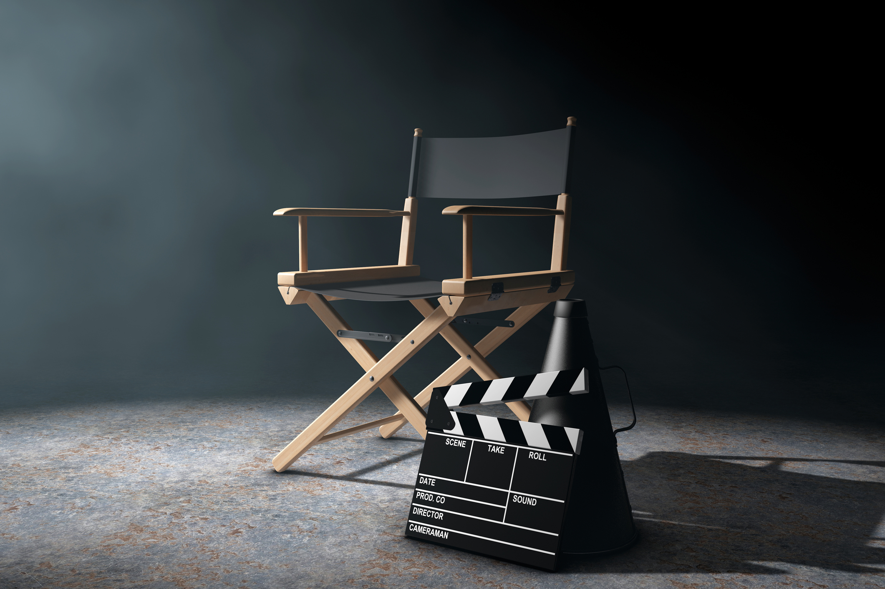

Equipo técnico de una producción
La profucción audiovisual es el resultado de juntar una serie de necesidades:
- Necesidad industrial: crea trabajo
- Comercial
- Entretenimiento
- Cultural
La forma de realizar sus películas y esto garantizará el éxito de las películas. La elección de la calidad depende del productor, ya que éste es quien aporta el dinero
Preguntas que tenemos que hacernos como productor
- Qué tipo de proyecto?
- Duración?
- Público
- Recursos: técnicos, humanos, dinero
Productor

El puesto de productor es complejoy se extenderá según el proyecto
equipo de productores
- Productor general: el máximo responsable y el encargado de todo el equipo, puede aportar dinero o no
- Productor ejecutivo: este es el que aporta el capital; controla todo el proyecto y puede ser una empresa, una persona, 10 personas, un familiar, un amigo, lo que quieras, y controla todo el proyecto.
- Produtor: organiza la producción técnica y administra el dinero.
- Coproducción: comparten gastos entre las dos productoras y han dado facilides para el rodaje.
- Productor asociado: no se le ha buscado pero esta persona se ha enterado del proyecto y luego quiere aportar capital.
- Director de producción: es un delegado del productor ejecutivo, para que cuando éste no pueda estar presente manda al director de producción para temas administrativos. es cando el CEO no puede ir al rodaje.
- Jefe de producción: es como el productor pero este está sólo en la etapa de rodaje.
- Ayudante de producción: mantienen el contacto en todo entre los diferentes departamentos.
- Secretario de producción: hace el papeleo y llevar los temas de burocracia y temas administrativos de las productoras o del productor.
- Auxiliar de producción: es el chico de los recados
- Contable: es el responsable de la contabilidad diaria de la producción, el que paga al personale técnico a los actores.
- Secretario de administración:Es la persona que redacta los contratos, hace las facturas.
- Enlaces: estas personas son las ecargadas que por conocimiento del entorno o facilidades de acceso de conseguir ciertas cosas, son contratados para facilitar la ayuda a parte del equipo de producción.
asociación cultural
sl
Proproducción
Todo este equipo se forma en lo que se llama desarrollo del proyecto, volvemos a la primera etapa que es la preproducción, que todo nace con la idea que hay que desarrollar. que es cuando aparecen todas las personas del equipo de producción; es la fase más importante de todas, y comprende desde la idea hasta el primer día de rodaje, todo lo que esté entre medias es preproducción, en el momento que hay el primer día de rodaje ya empieza la segunda fase.
- Supervisión y corrección del guion técnico: y se dan copias a los actores y a los técnicos así como precisen todas aquellas personas que necesitan esa información.
- Creación del storyboard: una vez tenemos el guion tecnico se puede hacer de forma digital o dibujada a mano.
- scouting/la selección de lugares: es la selección de lugares donde van a ser realizados los rodajes. pueden ser naturales o pueden ser sets de grabación.
- Tramitación de servicios: tramitaciones de servicios varios: música, copyright
- Contrataciones: equipo técnico y staff
Producción